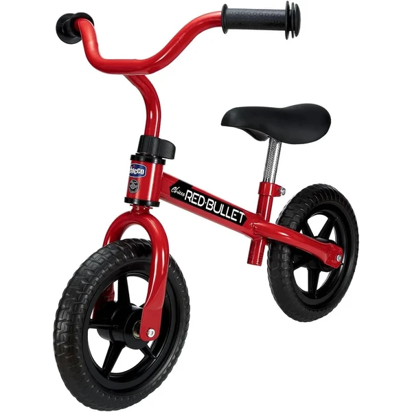

👶 4 años
Chicco First Bike
Una bicicleta sin pedales ultraligera con sillín y manillar ajustables, pensada para que el niño afiance el equilibrio antes de dar el salto a una bicicleta con pedales tradicional.
⭐
¿Por qué nos gusta?
- ✔Estructura ultraligera, fácil de manejar.
- ✔Sillín y manillar ajustables, crece con el niño.
- ✔Ruedas anti pinchazos, sin mantenimiento.
💬
Lo que más destacan las familias
Lo que más suele gustar es lo rápido que los niños cogen soltura gracias a lo ligera que resulta de manejar. Los padres notan que el paso posterior a una bici con pedales se hace mucho más fácil después de usarla.